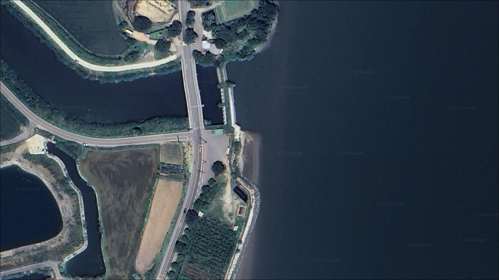
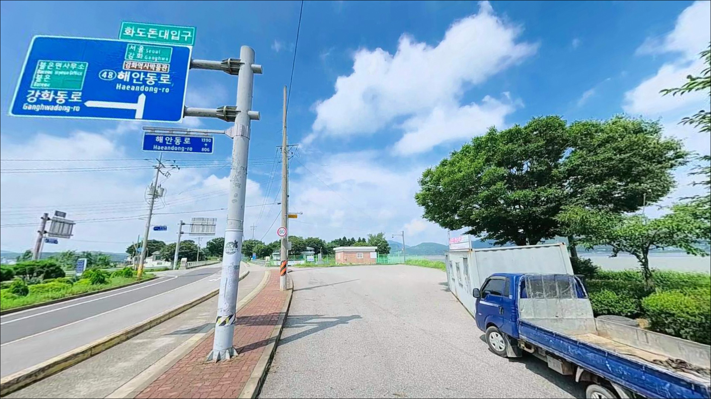
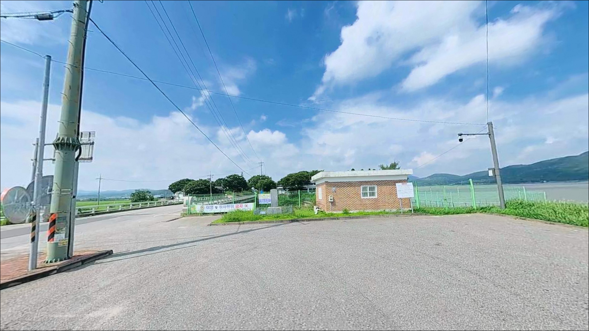
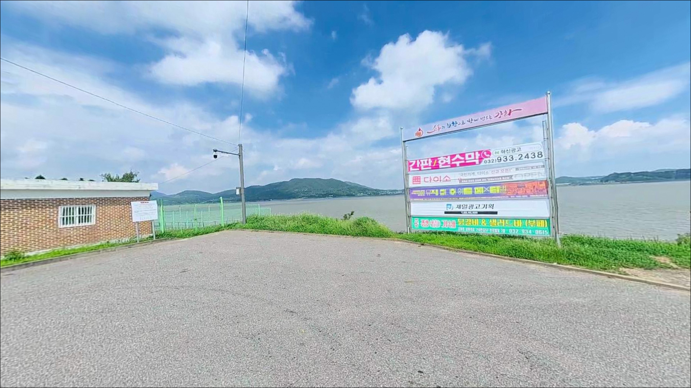
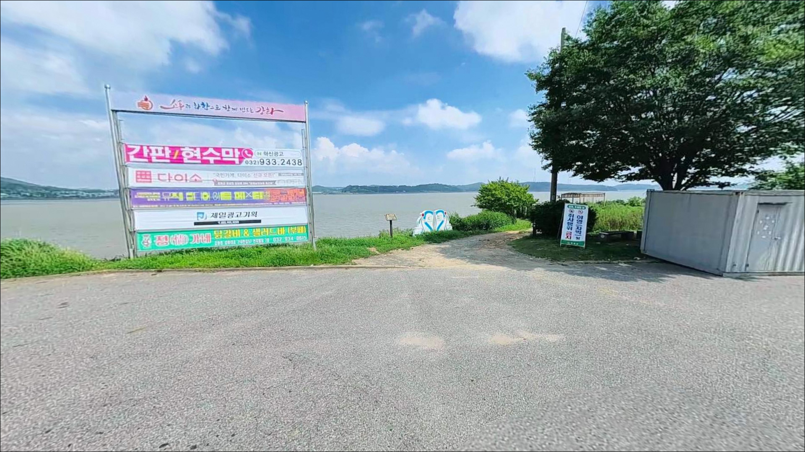
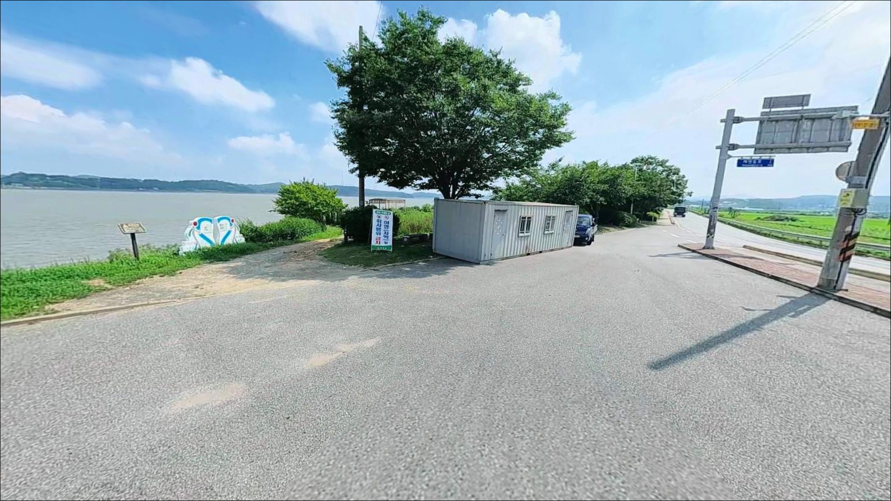
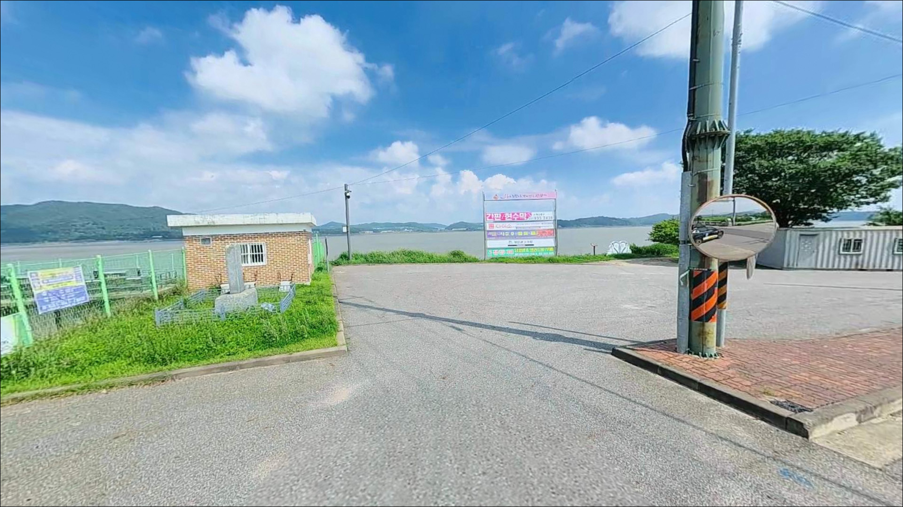
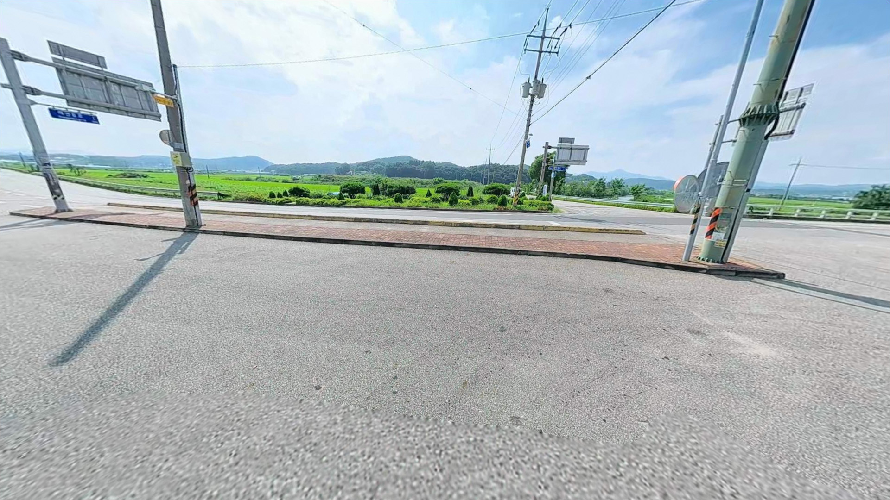
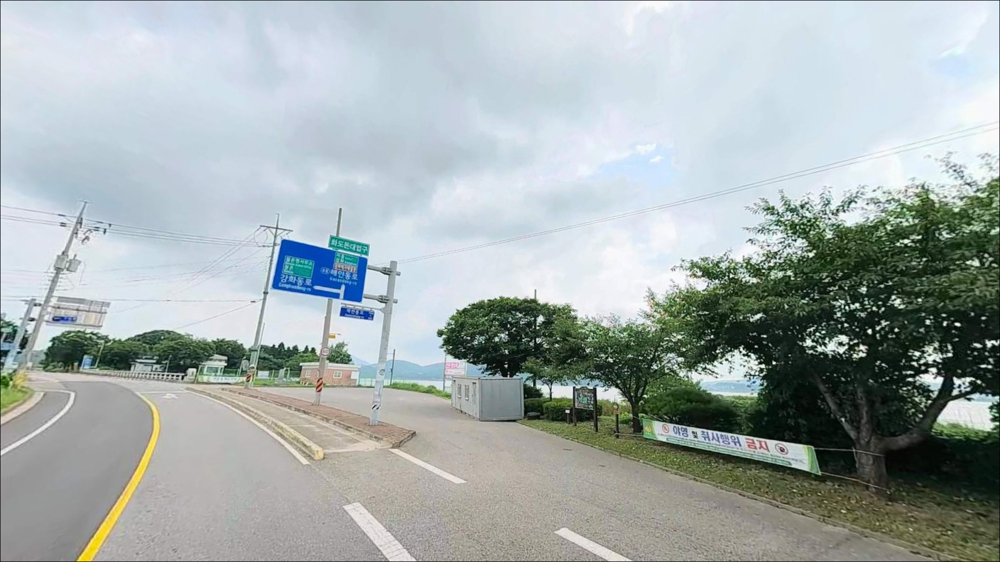

이 페이지에는 광고(제휴 링크 포함)가 있으며, 광고 링크를 통해 구매하면 운영자가 판매 수익 또는 수수료를 받을 수 있습니다. 포인트 사진: 카카오맵 스카이뷰·로드뷰. 이 페이지의 지도·사진 이미지는 카카오맵의 실제 서비스 이미지와 다를 수 있습니다.

화도돈대 주차장
인천 강화군 불은면 고능리 211-19
강화해협 연안은 조차가 커서
간조 때 찾으면 낚시 자리는커녕
발 앞까지 갯벌이 넓게 펼쳐집니다.
화도돈대 앞 해안도 마찬가지로,
물때를 모르고 도착하면 낚시 자체가 불가한
전형적인 서해북부 갯벌형 연안입니다.
강화 해협을 정면으로 마주한
이 해안은 조류 흐름이 강하고
만조 전후에만 의미 있는 수심이 형성되는 구조입니다.
원투낚시와 농어 루어낚시 모두 물때를 기준으로
입장 시간을 역산해야 하는 포인트입니다.
이 글은
화도돈대 주차장의
진입 환경, 차박 여건, 물때 기반 낚시 조건,
낚시 스타일별 공략 방향에 집중합니다.
조황 단정이나 특정 어종 보장은
이 글의 범위에 포함되지 않습니다.

강화대교를 건너 강화도에 진입한 뒤
해안남로 방향으로 이동하면
불은면 고능리 방면 해안 도로로 연결됩니다.
강화도 동쪽 해안선을 따라 이어지는 도로는
편도 1차선 구간이 대부분이라
소형 승용차나 중형 SUV 기준으로는 무난하지만,
대형 캠핑카나 루프탑 텐트 차량이라면
출발 전 위성지도로 고능리 진입 후
주차장까지의 마지막 구간을 반드시 확인하는 편이 좋습니다.
화도돈대는 강화군 공식 문화재로 등재된 시설로,
부속 주차장이 마련되어 있을 가능성이 있습니다.
다만 야간 출입 가능 여부와 주차 가능 규모는
현장에서 직접 확인이 필요한 항목입니다.
방문 전 강화군 문화관광과(032-930-3114)에
유선으로 확인해 두는 것이 가장 안전한 준비입니다.
주차장 구조 특성상 회차 자체는 어렵지 않을 것으로 보이며,
어선 접안 구조물이 없는 문화재 부속 공간이라
진입 후 자리 잡는 방식은
관광 방문객 동선과 겹치지 않는 구간으로 판단하면 됩니다.

불은면 고능리는 농촌과 소규모 어촌 마을이 주를 이루는 지역입니다.
야간 차량 통행은 적고
민가 밀집도가 낮아
소음 측면의 프라이버시는 양호한 편일 것으로 보입니다.
다만 가로등이 거의 없을 가능성이 높아
야간에는 헤드랜턴과 랜턴을 충분히 준비해야 합니다.
강화해협 쪽 바람은 계절에 따라 상당히 강한 날이 있습니다.
파도보다는 조류와 바람이 변수인 해안이라
기상청 예보에서 풍속을 반드시 확인하고
방문 여부를 결정하는 편이 좋습니다.
화도돈대는 강화군 지정 문화재 구역에 해당하므로
주차장 내 야영·취사 가능 여부를 출발 전에 먼저 확인해야 합니다.
문화재 보호구역 내 지정 외 장소에서의
취사·야영은 제한될 수 있습니다.

화도돈대 반경 3km 이내는
농촌·소규모 마을 위주의 지역으로
편의점이나 식당을 기대하기 어렵습니다.
출발 전 강화읍 방면에서
식수·얼음·연료·낚시 소품을 완전히 갖추고
진입하는 것이 현실적인 준비 방식입니다.
강화읍까지 차량으로 약 15~20분 거리로 추정되며,
강화읍내에 마트·주유소·낚시용품점 등
기본 인프라를 이용할 수 있습니다.
현장 인근에서 부족한 소품을 조달하기는 어렵기 때문에
출발 전 준비를 꼼꼼하게 챙기는 것이 우선입니다.

화도돈대 앞 해안에서 낚시를 계획한다면
물때 확인이 가장 먼저입니다.
강화해협은 조차가 큰 서해북부 해역으로
간조 때는 갯벌이 넓게 노출되어
어떤 채비를 써도 낚시 자체가 성립하지 않습니다.
바다타임에서 강화·불은면 기준 물때를 확인하고
초밀물~중밀물 타이밍에 입장 시간을 맞추는 것이 기본입니다.
강화해협 특성상 조류 흐름이 빠른 날에는
채비 컨트롤이 어려워질 수 있습니다.
원투낚시라면 봉돌 무게를 넉넉하게 준비하고,
밑걸림을 대비한 여분 채비도 충분히 챙기는 것이 좋습니다.
야간 입장 시에는 헤드랜턴과 구명조끼를 반드시 챙겨야 합니다.
갯벌이 드러나는 해안은 바닥이 미끄럽고
조류 변화가 빠르기 때문에
물때 경계선 근처에서의 발판 확보에 각별히 주의해야 합니다.

화도돈대 앞 해안은
강화해협을 마주한 서해북부 갯벌형 연안입니다.
간조 시 갯벌이 넓게 드러나고
만조 전후에 수심이 확보되는 완경사 지형으로 보이며,
방파제나 선착장 같은 구조물은
인근에서 확인되지 않습니다.
강화해협은 한강·임진강 하구와 연결된 해역으로
조류 흐름이 강하기로 알려진 곳입니다.
이 흐름이 회유성 어종이 지나는 길목 역할을 하며,
초밀물에서 중밀물 사이가 입질 타이밍으로
강화도 전반 연안낚시에서 공통적으로 나타나는 패턴입니다.
바닥은 갯벌 위주이며 일부 암반 지형이 혼재할 가능성이 있습니다.
채비를 멀리 보내 수심이 확보된 구간을 노리거나,
밀물이 들어오는 타이밍에
갯벌 끝 수로 형성 구간을 탐색하는 방식이
이 해안 지형에 맞는 접근입니다.
최신 조황은 가기 전에 꼭 검색해 보시기 바랍니다.

이 해안에서 가장 현실적인 낚시는
원투낚시입니다.
갯벌형 연안에서 만조 전후 물이 들어차는 타이밍에
멀리 채비를 보내 바닥 어종을 노리는 방식은
강화도 동해안 연안낚시의 기본 패턴입니다.
망둥어, 숭어, 붕장어가
이런 지형에서 기대해 볼 수 있는 어종입니다.
농어 루어낚시도 시도해볼 만한 스타일입니다.
강화해협의 강한 조류를 타고 회유하는 농어는
강화도 해안선 전반에서 낚시인들이 노리는 어종입니다.
미노우나 바이브레이션 계열 루어를 써서
조류 방향에 맞게 흘려 탐색하는 방식이 이 해안에 어울립니다.
여름에서 초가을 사이가 시즌으로 보입니다.
숭어 루어낚시도 병행할 수 있는 옵션입니다.
갯벌형 연안에서 중상층을 유영하는 숭어는
밀물이 들어오면서 먹이 활동을 시작하는 경향이 있습니다.
가볍고 반짝이는 소형 스푼 계열 루어를
빠르게 리트리브하며
수면 가까이에서 탐색하는 방식이 적합합니다.

화도돈대 주차장 여건이 여의치 않거나
물때가 맞지 않을 때
가장 먼저 이동할 곳은
선두리 방파제(화도면 선두리)입니다.
수심이 완만하고 조류가 안정적이라는 후기가
낚시 커뮤니티에서 여러 차례 소개된 포인트이며,
방파제 입구까지 차량 진입이 가능하다는 정보도 있습니다.
광성보 인근 해안(덕성리)도
강화도 동해안에서 낚시인들이 실제로 찾는 구간입니다.
강화대교에서 초지대교 사이 해안 좌측을 따라
여러 개의 낚시 자리가 형성되어 있으며,
주차장과 노점이 갖춰진 곳이 있다는 후기도 있습니다.
화도돈대와 동일한 강화해협 방면 포인트라
물때 조건을 함께 적용하면서 이동할 수 있습니다.
초지항도 반경 10km 이내의 대안입니다.
강화 남부에서 규모가 가장 큰 항구로
방파제 낚시와 기본 인프라를 동시에 이용하기 좋습니다.
화도돈대에서 방향을 달리해 움직이는
플랜 B 동선으로 활용할 수 있습니다.

서해 갯벌 연안 특성상 물때를 무시하면
어떤 포인트도 낚시가 되지 않습니다.
화도돈대 앞 해안은 강화해협의 강한 조류와
갯벌형 지형이 맞물린 곳으로,
밀물 타이밍을 기준으로 입장 시각을 맞춘다면
원투낚시와 농어 루어낚시를 함께 시도해볼 수 있습니다.
반면 탐색형 포인트라는 점은 솔직하게 인정해야 합니다.
이 해안의 낚시 조황 기록은 거의 없는 상태이고,
문화재 주차장이라는 특성상
야간 개방 여부와 취사 제한을 사전 확인하지 않으면
차박 계획 자체가 현장에서 무너질 수 있습니다.
사전 준비만 꼼꼼하게 갖춘다면,
강화해협을 바라보며 조용히 하룻밤 보내기 좋은
조용한 해안이 될 수 있는 곳입니다.
가볍게 낚시를 던지면서
역사 유적 옆 서해 바람을 맞는 차박 여행을 원하는 분이라면,
물때 확인과 주차장 개방 여부 이 두 가지만 먼저 해결하고
출발하시기 바랍니다.